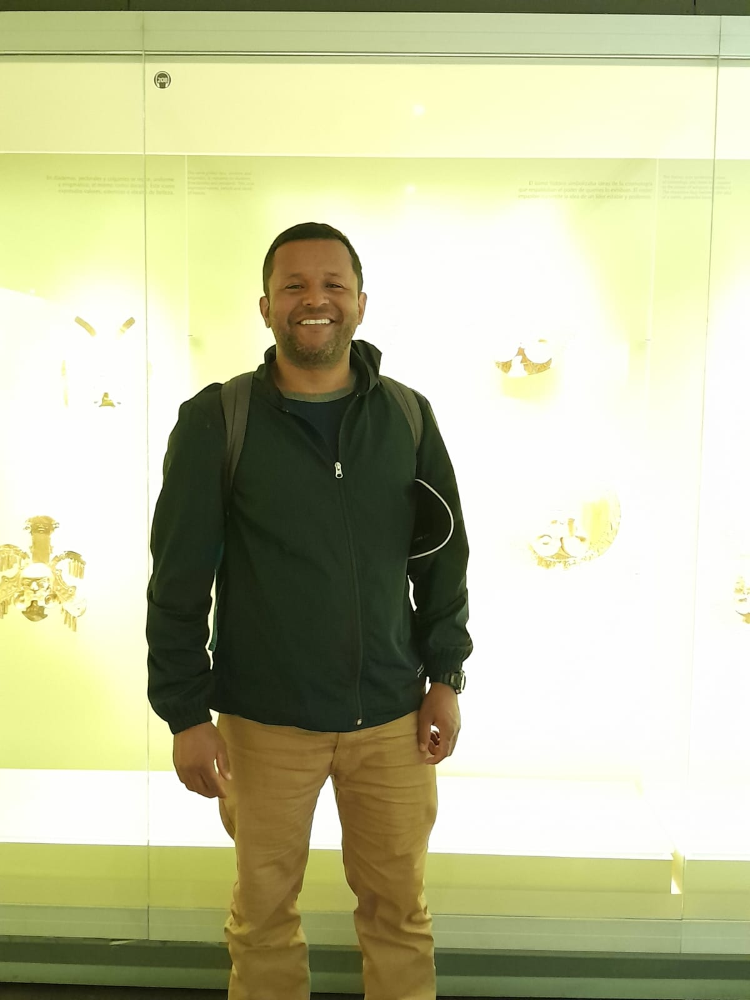

Profile 1
Specialist in satellite data processing and emission inversion methods. Focused on integrating high-resolution atmospheric data with advanced computational models.

Profile 2
Expert in environmental consultancy and policy assessment. Dedicated to bridging scientific modeling and decision-making frameworks for sustainable management.